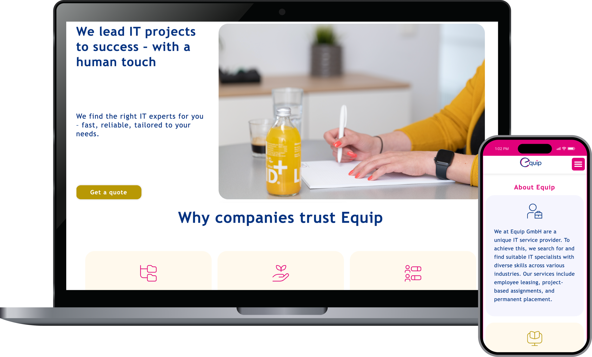

Web, brand & UX work
Shorter engagements, website redesigns, and brand-aligned UX projects — each presented with research context, design iterations, moodboard, and wireframes.
| Client | Equip GmbH |
| Year | 2026 |
| Role | UX/UI Designer — Web redesign |
| Scope | Website redesign, employer branding, UX strategy |
| Market | IT staffing & personnel consulting, Austria/DACH |
| Audiences | Enterprise clients · IT candidates |
| Stack | Responsive HTML/CSS, CMS integration |
Repositioning an IT staffing firm as a human-first employer brand — without losing the corporate credibility that enterprise clients expect.
Equip GmbH is an Austrian IT personnel consulting firm founded in 2002, placing software developers, project managers, and IT specialists with enterprise clients across the DACH region. The redesign centred on two simultaneous audiences with opposing needs: enterprise clients who want reliability signals, and candidates who want to sense culture and human connection.
The result is a warm, photography-led site anchored around four brand values — Menschlichkeit, Vertrauen, Offenheit, Stabilität — with a clear dual-CTA hero that routes each audience to their respective section from the first scroll.

| Client | Mantlersche Apotheke |
| Year | 2018 |
| Role | UX/UI Designer — Web redesign |
| Scope | Website redesign, information architecture, responsive design |
| Market | Community pharmacy, Austria |
| Audiences | Pharmacy customers · Patients |
| Stack | Responsive HTML/CSS |
Modernising a Viennese community pharmacy's web presence — clarity-first design for patients who need answers fast.
Mantlersche Apotheke is an established Austrian pharmacy serving a local community audience. Completed in 2018, the redesign replaced an existing site that relied on image-based tile navigation and a dated layout — making key information such as opening hours, emergency services, and the customer loyalty programme difficult to locate quickly, particularly on mobile.
The design prioritises rapid access to the most frequently needed information: store hours, emergency pharmaceutical duty (Bereitschaftsdienst), and the Kundenkarte loyalty programme. A clean typographic hierarchy and an accessible colour palette deliver a responsive experience across all devices without compromising the trust signals expected of a healthcare provider.